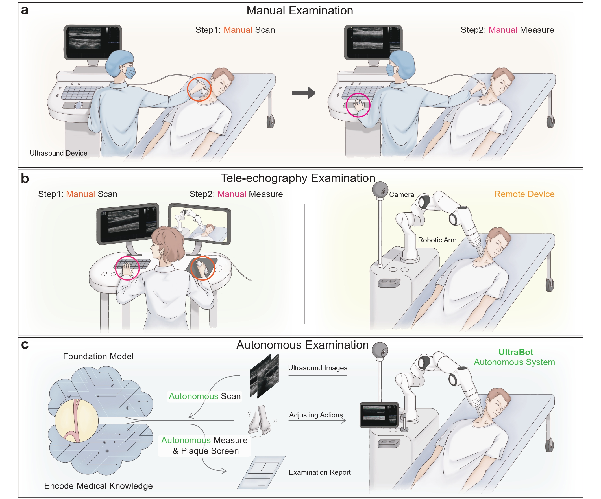

Carotid ultrasound requires skilled operators due to small vessel dimensions and high anatomical variability, exacerbating sonographer shortages and diagnostic inconsistencies. Prior automation attempts, including rule-based approaches with manual heuristics and reinforcement learning trained in simulated environments, demonstrate limited generalizability and fail to complete real-world clinical workflows. Here, we present UltraBot, a fully learning-based autonomous carotid ultrasound robot, achieving human-expert-level performance through four innovations: (1) A unified imitation learning framework for acquiring anatomical knowledge and scanning operational skills; (2) A large-scale expert demonstration dataset (247,000 samples, 100 times scale-up), enabling embodied foundation models with strong generalization; (3) A comprehensive scanning protocol ensuring full anatomical coverage for biometric measurement and plaque screening; (4) The clinical-oriented validation showing over 90% success rates, expert-level accuracy, up to 5.5× higher reproducibility across diverse unseen populations. Overall, we show that large-scale deep learning offers a promising pathway toward autonomous, high-precision ultrasonography in clinical practice.
(a) Scanning process in a 65-year-old patient with plaque, yielding high-quality transverse and longitudinal views with clear plaque visibility. (b) Image analysis of acquired scans, including biometric measurements, plaque segmentation, and color/pulse Doppler. (c) Representative report summarizing scanning and analysis results. (d) Representative plaque segmentation results of patients. The term “CCA”, “ICE”, “ECA”, “PMH”, “PSV”, “EDV”, “RI” refer to the common carotid artery, internal carotid artery, external carotid artery, past medical history, peak systolic velocity, end diastolic velocity, and resistive factor respectively.
(a) Hypothesis test of results consistency between of autonomous system and sonographers. (b) Testing the reproducibility of measurements of the CIMT (first row) and CALD (second row) between the robot system and sonographers, evaluated by the SCC, ICC, CV, and MAD. (c) Success rate of the robot system on volunteers. (d) Robustness of the robotic system across variations in age, BMI, machine type, and imaging parameters. (e) Bland-Altman plot assessing the consistency between lumen diameter and intima-media thickness measurements from the robot system and sonographers. (f) Comparison of the total time taken for scanning and measurement by the robot system and sonographers, as well as a comparison of just the measurement time. (g) Volunteers' subjective comfort perceptions under the operation of the robot system and sonographers. (h) Contact force in the Z-axis (up and down) direction between the transducer and the human neck during the scanning process.